import sys
import warnings
sys.path.insert(0, '..')
import arviz as az
import matplotlib.pyplot as plt
import numpy as np
import pandas as pd
import xarray as xr
from scipy.special import expit
import preliz as pz
from cmdstanpy import CmdStanModel, disable_logging
from utils import print_stan
warnings.filterwarnings("ignore")
disable_logging()
az.style.use("arviz-variat")
az.rcParams["stats.ci_prob"] = 0.95
plt.rcParams["figure.dpi"] = 100
SEED = 7412Model building and expansion for golf putting
This notebook includes the code for Bayesian Workflow book chapter 25 Model building and expansion: Golf putting.
0.1 Introduction
We demonstrate the basic workflow of Bayesian modeling using an example of a set of models fit to data on golf putting.
# utility function for plotting the data
def plot_common(title, plot_observations=True):
_, ax = plt.subplots(figsize=(10, 5))
if plot_observations:
ax.scatter(x, y / n, color="k")
ax.errorbar(x, y / n, yerr=se, fmt="none", color="k")
ax.set(xlim=(0, x.max() + 1),
ylim=(0, 1.02),
xlabel="Distance from hole (feet)",
ylabel="Probability of success",
title=title)
return ax
# utility function to convert CmdStanMCMC or CmdStanPathfinder to a list of init dicts for sample()
def cmdstan_inits(fit, chains=4):
vars_ = list(fit.stan_variables().keys())
n = len(fit.draws())
return [
{var: fit.stan_variable(var)[i % n] for var in vars_}
for i in range(chains)
]0.2 Data
The following graph shows data from professional golfers on the proportion of successful putts as a function of distance from the hole (from Berry 1996). Unsurprisingly, the probability of making the shot declines as a function of distance:
golf = pd.read_csv("data/golf_data.txt", sep=r"\s+", skiprows=2)
x = golf["x"].values
y = golf["y"].values
n = golf["n"].values
J = len(y)
r = (1.68 / 2) / 12
R = (4.25 / 2) / 12
se = np.sqrt((y / n) * (1 - y / n) / n)ax = plot_common("Data on putts in pro golf")
for i in range(J):
ax.annotate(f"{y[i]}/{n[i]}", (x[i] + 0.1, y[i] / n[i] + se[i] + 0.01), fontsize=9, color="0.1")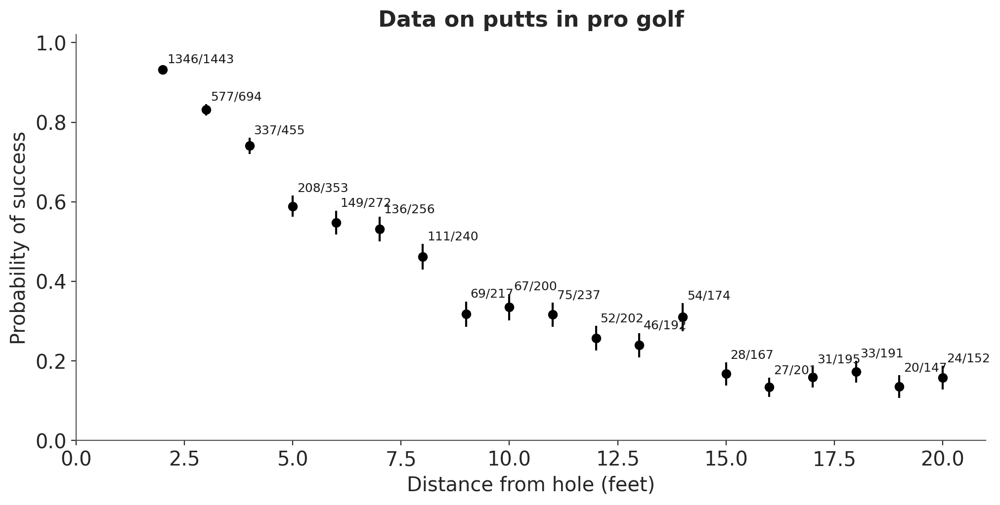
The error bars associated with each point \(j\) in the above graph are simple classical standard deviations, \(\sqrt{\hat{p}_j(1-\hat{p}_j)/n_j}\), where \(\hat{p}_j=y_j/n_j\) is the success rate for putts taken at distance \(x_j\).
1 Logistic regression
Can we model the probability of success in golf putting as a function of distance from the hole? Given usual statistical practice, the natural starting point would be logistic regression:
\[ y_j\sim\mathrm{binomial}(n_j, \mathrm{logit}^{-1}(a + bx_j)), \text{ for } j=1,\dots, J. \]
In Stan, this is:
model_1 = CmdStanModel(stan_file=str("golf_logistic.stan"))
print_stan(model_1)data {
int J;
vector[J] x;
array[J] int n;
array[J] int y;
}
parameters {
real a;
real b;
}
model {
y ~ binomial_logit(n, a + b*x);
}The code in the above model block is (implicitly) vectorized, so that it is mathematically equivalent to modeling each data point, y[i] ~ binomial_logit(n[i], a + b*x[i]). The vectorized code is more compact (no need to write a loop, or to include the subscripts) and faster (because of more efficient gradient evaluations).
We fit the model to the data:
golf_data = {"x": x, "y": y, "n": n, "J": J}
fit_1 = model_1.sample(data=golf_data, seed=SEED, show_progress=False)And here is the result:
dt_1 = az.from_cmdstanpy(fit_1)
n_sims = dt_1.posterior.sizes["draw"] * dt_1.posterior.sizes["chain"]
df = az.summary(dt_1)
df| mean | sd | eti95_lb | eti95_ub | ess_bulk | ess_tail | r_hat | mcse_mean | mcse_sd | |
|---|---|---|---|---|---|---|---|---|---|
| a | 2.235 | 0.056 | 2.1 | 2.3 | 1158 | 1075 | 1.00 | 0.0017 | 0.0011 |
| b | -0.2561 | 0.0064 | -0.27 | -0.24 | 1189 | 1234 | 1.00 | 0.00019 | 0.00013 |
Going through the columns of the above Table: ArviZ has computed the posterior means \(\pm\) standard deviations of \(a\) and \(b\) to be 2.235 \(\pm\) 0.056 and -0.2561 \(\pm\) 0.0064, respectively. The Monte Carlo standard error of the mean of each of these parameters is 0 (to two decimal places), indicating that the simulations have run long enough to estimate the posterior means precisely. The posterior quantiles give a sense of the uncertainty in the parameters, with 50% posterior intervals of [2.20, 2.27] and [-0.26, -0.25] for \(a\) and \(b\), respectively. Finally, the values of \(\widehat{R}\) near 1 tell us that the four simulated chains have mixed well.
The following graph shows the fit plotted along with the data:
post_rng = az.extract(dt_1, num_samples=100, random_seed=SEED)
hats = az.mean(dt_1, round_to="None")
x_da = xr.DataArray(x, dims=["x"])
y_pred_lr = expit(post_rng["a"] + post_rng["b"] * x_da).T
y_pred_lr_mean = expit(hats["a"] + hats["b"] * x_da)
ax = plot_common("Fitted logistic regression")
ax.plot(x_da, y_pred_lr, color="C0", alpha=0.01)
ax.plot(x_da, y_pred_lr_mean, color="C0")
ax.annotate(f"Logistic regression,\n a = {hats["a"]:.2f}, b = {hats["b"]:.2f}", xy=(11, 0.57))Text(11, 0.57, 'Logistic regression,\n a = 2.23, b = -0.26')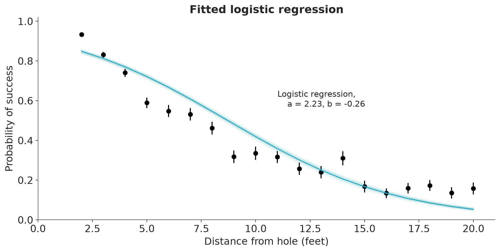
The black line shows the fit corresponding to the posterior median estimates of the parameters \(a\) and \(b\); the green lines show 10 draws from the posterior distribution.
In this example, posterior uncertainties in the fits are small, and for simplicity we will just plot point estimates based on posterior median parameter estimates for the remaining models. Our focus here is on the sequence of models that we fit, not so much on uncertainty in particular model fits.
1.1 Modeling from first principles
As an alternative to logistic regression, we shall build a model from first principles and fit it to the data.
The graph below shows a simplified sketch of a golf shot. The dotted line represents the angle within which the ball of radius \(r\) must be hit so that it falls within the hole of radius \(R\). This threshold angle is \(\sin^{-1}((R-r)/x)\). The graph, which is not to scale, is intended to illustrate the geometry of the ball needing to go into the hole.
dist = 2
r_plot = r
R_plot = R
_, ax = plt.subplots()
ax.set(xlim=(-R_plot, dist + 3 * R_plot),
ylim=(-2 * R_plot, 2 * R_plot),
aspect="equal",
)
ax.axis("off")
circle_ball = plt.Circle((0, 0), r_plot, fill=True, color="gray")
circle_hole_inner = plt.Circle((dist, 0), R_plot - r_plot, fill=False, linestyle="--")
circle_hole_outer = plt.Circle((dist, 0), R_plot, fill=False)
ax.add_patch(circle_ball)
ax.add_patch(circle_hole_inner)
ax.add_patch(circle_hole_outer)
ax.plot([0, dist], [0, 0], "k-")
inner_r = R_plot - r_plot
alpha = np.arcsin(inner_r / dist)
x_tang = dist * np.cos(alpha)**2
y_tang = dist * np.cos(alpha) * np.sin(alpha)
ax.plot([0, x_tang], [0, y_tang], "k--")
ax.plot([0, x_tang], [0, -y_tang], "k--")
ax.annotate("x", xy=(0.5 * dist, -1.5 * R_plot), fontsize=10, ha="center")
ax.annotate("", xy=(dist, -1.5 * R_plot), xytext=(0.5 * dist + 0.05, -1.5 * R_plot),
arrowprops=dict(arrowstyle="->", lw=0.5))
ax.annotate("", xy=(0, -1.5 * R_plot), xytext=(0.5 * dist - 0.05, -1.5 * R_plot),
arrowprops=dict(arrowstyle="->", lw=0.5))
ax.annotate("R", xy=(dist + 1.2 * R_plot, 0.5 * R_plot), fontsize=10, ha="center")
ax.annotate("", xy=(dist + 1.2 * R_plot, R_plot), xytext=(dist + 1.2 * R_plot, 0.7 * R_plot),
arrowprops=dict(arrowstyle="->", lw=0.5))
ax.annotate("", xy=(dist + 1.2 * R_plot, 0), xytext=(dist + 1.2 * R_plot, 0.3 * R_plot),
arrowprops=dict(arrowstyle="->", lw=0.5))
ax.annotate("r", xy=(0, r_plot / 2), fontsize=10, ha="center")Text(0, 0.034999999999999996, 'r')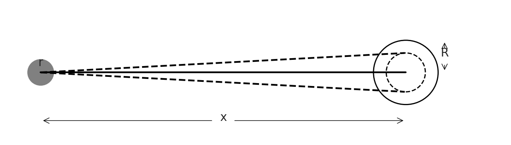
The next step is to model human error. We assume that the golfer is attempting to hit the ball completely straight but that many small factors interfere with this goal, so that the actual angle follows a normal distribution centered at 0 with some standard deviation \(\sigma\).
ax = pz.Normal(0, 1).plot_pdf(legend=False, figsize=(7, 3))
ax.set(xlim=(-4, 4),
xlabel="Angle of shot",
xticks=[-2, 0, 2],
xticklabels=[r"$-2\sigma$", "0", r"$2\sigma$"],
)
ax.spines[["left"]].set_visible(False);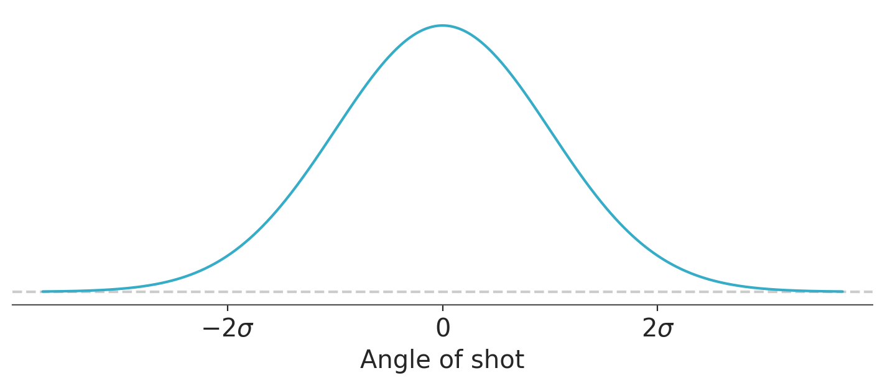
The probability the ball goes in the hole is then the probability that the angle is less than the threshold; that is, \(\mathrm{Pr}\left(|\mathrm{angle}| < \sin^{-1}((R-r)/x)\right) = 2\Phi\left(\frac{\sin^{-1}((R-r)/x)}{\sigma}\right) - 1\), where \(\Phi\) is the cumulative normal distribution function. The only unknown parameter in this model is \(\sigma\), the standard deviation of the distribution of shot angles. Stan (and, for that matter, R) computes trigonometry using angles in radians, so at the end of our calculations we will need to multiply by \(180/\pi\) to convert to degrees, which are more interpretable by humans.
Our model then has two parts: \[\begin{align} y_j &\sim \mathrm{binomial}(n_j, p_j)\\ p_j &= 2\Phi\left(\frac{\sin^{-1}((R-r)/x_j)}{\sigma}\right) - 1 , \text{ for } j=1,\dots, J. \end{align}\] Here is a graph showing the curve for some potential values of the parameter \(\sigma\).
fig, ax = plt.subplots()
sigma_degrees_plot = [0.5, 1, 2, 5, 20]
x_text = [15, 10, 6, 4, 2]
for i, sigma_deg in enumerate(sigma_degrees_plot):
sigma = (np.pi / 180) * sigma_deg
x_grid = np.arange(R - r, 1.1 * max(x), 0.01)
p_grid = 2 * pz.Normal(0, 1).cdf(np.arcsin((R - r) / x_grid) / sigma) - 1
ax.plot(
np.concatenate([[0, R - r], x_grid]),
np.concatenate([[1, 1], p_grid]),
color="black"
)
ax.text(
x_text[i] + 0.7,
2 * pz.Normal(0, 1).cdf(np.arcsin((R - r) / x_text[i]) / sigma) - 1,
rf"$\sigma = {sigma_deg}°$",
va="center"
)
ax.set(xlim=(0, None),
ylim=(0, 1),
xlabel="Distance from hole (feet)",
ylabel="Probability of success",
title=r"Modeled Pr(success) for different values of $\sigma$",
);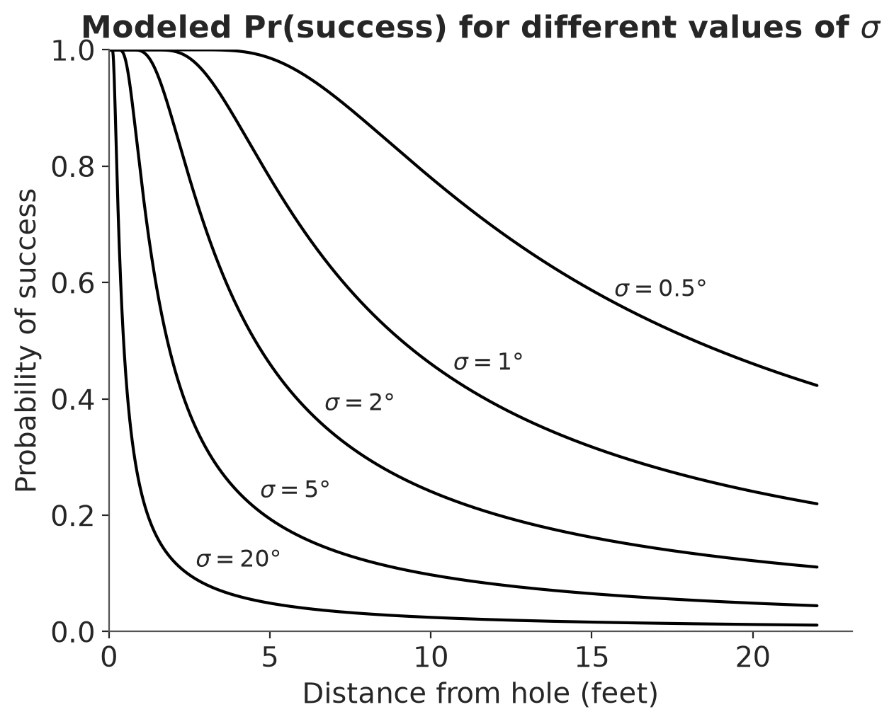
The highest curve on the graph corresponds to \(\sigma=0.5^\circ\): if golfers could control the angles of their putts to an accuracy of approximately half a degree, they would have a very high probability of success, making over 80% of their ten-foot putts, over 50% of their fifteen-foot putts, and so on. At the other extreme, the lowest plotted curve corresponds to \(\sigma=20^\circ\): if your putts could be off as high as 20 degrees, then you would be highly inaccurate, missing more than half of your two-foot putts. When fitting the model in Stan, the program moves around the space of \(\sigma\), sampling from the posterior distribution.
We now write the Stan model in preparation to estimating \(\sigma\):
model_2 = CmdStanModel(stan_file=str("golf_angle_binomial.stan"))
print_stan(model_2)data {
int J;
vector[J] x;
array[J] int n;
array[J] int y;
real r, R;
}
transformed data {
vector[J] threshold_angle = asin((R-r) ./ x);
}
parameters {
real<lower=0> sigma;
}
model {
vector[J] p;
p = 2*Phi(threshold_angle / sigma) - 1;
y ~ binomial(n, p);
}
generated quantities {
real sigma_degrees = sigma * 180 / pi();
}In the transformed data block above, the ./ in the calculation of p corresponds to componentwise division in this vectorized computation.
The data \(J,n,x,y\) have already been set up; we just need to define \(r\) and \(R\) (the golf ball and hole have diameters 1.68 and 4.25 inches, respectively), and run the Stan model:
golf_data = {**golf_data, "r": r, "R": R}
fit_2 = model_2.sample(data=golf_data, seed=SEED, show_progress=False)Here is the result:
dt_2 = az.from_cmdstanpy(fit_2)
df = az.summary(dt_2)
df| mean | sd | eti95_lb | eti95_ub | ess_bulk | ess_tail | r_hat | mcse_mean | mcse_sd | |
|---|---|---|---|---|---|---|---|---|---|
| sigma | 0.02667 | 0.00039 | 0.026 | 0.027 | 1456 | 1733 | 1.00 | 1e-05 | 7.3e-06 |
| sigma_degrees | 1.528 | 0.0224 | 1.5 | 1.6 | 1456 | 1733 | 1.00 | 0.00059 | 0.00042 |
The model has a single parameter, \(\sigma\). From the output, we find that Stan has computed the posterior mean of \(\sigma\) to be 0.02667. Multiplying this by \(180/\pi\), this comes to 1.528 degrees. The Monte Carlo standard error of the mean is 0 (to two decimal places), indicating that the simulations have run long enough to estimate the posterior mean precisely. The posterior standard deviation is calculated at 0.0224 degrees, indicating that \(\sigma\) itself has been estimated with high precision, which makes sense given the large number of data points and the simplicity of the model. The precise posterior distribution of \(\sigma\) can also be seen from the narrow range of the posterior quantiles. Finally, \(\widehat{R}\) is near 1, telling us that the simulations from Stan’s four simulated chains have mixed well.
We next plot the data and the fitted model (here using the posterior median of \(\sigma\) but in this case the uncertainty is so narrow that any reasonable posterior summary would give essentially the same result), along with the logistic regression fitted earlier:
hats = az.mean(dt_2, round_to="None")
sigma_hat = hats["sigma"].item()
y_pred_gb_mean = 2 * pz.Normal(0, 1).cdf(np.arcsin((R - r) / x_da) / sigma_hat) - 1
ax = plot_common("Two models fit to the golf putting data")
ax.plot(x_da, y_pred_lr_mean, color="C0", label="Logistic regression", lw=2)
ax.plot(x_da, y_pred_gb_mean, color="C1", label="Geometry-based model", lw=2)
plt.legend()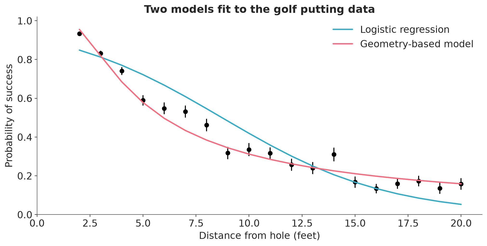
The custom nonlinear model fits the data much better. This is not to say that the model is perfect—any experience of golf will reveal that the angle is not the only factor determining whether the ball goes in the hole—but it seems like a useful start.
1.2 Testing the fitted model on new data
Several years after fitting the above model, we were presented with a newer and more comprehensive dataset on professional golf putting (Broadie 2018). For simplicity we’ll just look here at the summary data, probabilities of the ball going into the hole for shots up to 75 feet from the hole. The graph below shows these new data (in red), along with our earlier dataset (in blue) and the already-fit geometry-based model from before, extending to the range of the new data.
golf_new = pd.read_csv("data/golf_data_new.txt", sep=r"\s+", skiprows=2)ax = plot_common(title="Checking already-fit model to new data", plot_observations=False)
x_grid = np.arange(R - r, 1.1 * golf_new["x"].max(), 0.01)
p_grid = 2 * pz.Normal(0, 1).cdf(np.arcsin((R - r) / x_grid) / sigma_hat) - 1
ax.plot(np.concatenate([[0, R - r], x_grid]),
np.concatenate([[1, 1], p_grid]), color="C0")
ax.scatter(golf["x"], golf["y"] / golf["n"], color="C0", label="Old data")
ax.scatter(golf_new["x"], golf_new["y"] / golf_new["n"], color="C1", label="New data")
ax.set_xlim(0, 1.1 * golf_new["x"].max())
ax.legend()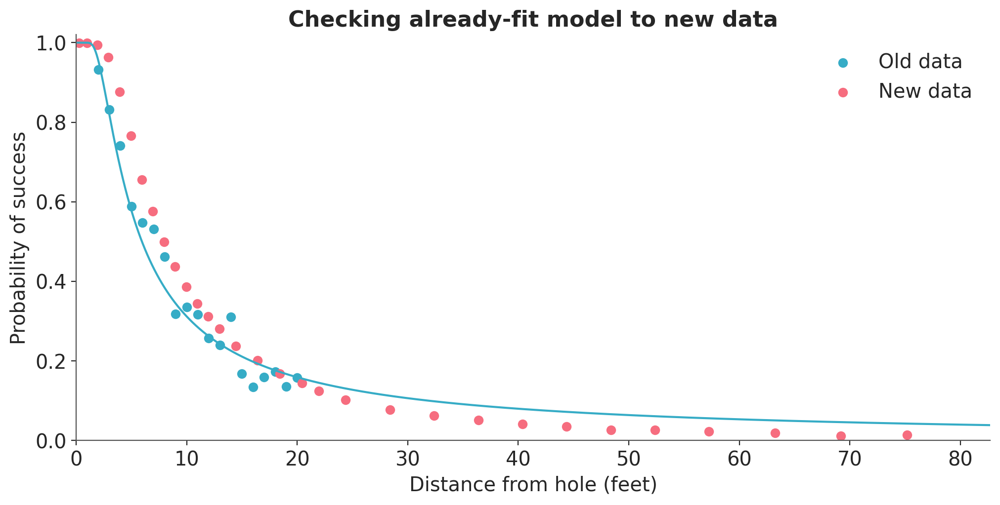
Comparing the two datasets in the range 0-20 feet, the success rate is similar for longer putts but is much higher than before for the short putts. This could be a measurement issue, if the distances to the hole are only approximate for the old data, and it could also be that golfers are better than they used to be.
Beyond 20 feet, the empirical success rates become lower than would be predicted by the old model. These are much more difficult attempts, even after accounting for the increased angular precision required as distance goes up. In addition, the new data look smoother, which perhaps is a reflection of more comprehensive data collection.
1.3 A new model accounting for how hard the ball is hit
To get the ball in the hole, the angle isn’t the only thing you need to control; you also need to hit the ball just hard enough.
Broadie (2018) added this feature to the geometric model by introducing another parameter corresponding to the golfer’s control over distance. Supposing \(u\) is the distance that golfer’s shot would travel if there were no hole, the assumption is that the putt will go in if (a) the angle allows the ball to go over the hole, and (b) \(u\) is in the range \((x,x+3)\). That is the ball must be hit just hard enough to reach the hole but not go too far. Factor (a) is what we have considered earlier; we must now add factor (b).
The following sketch, which is not to scale, illustrates the need for the distance as angle as well as the angle of the shot to be in some range, in this case the gray zone which represents the trajectories for which the ball would reach the hole and stay in it.
dist = 2
r_plot = r
R_plot = R
distance_tolerance = 0.6
fig, ax = plt.subplots()
ax.set_xlim(-R_plot, dist + 3 * R_plot + 1.5 * distance_tolerance)
ax.set_ylim(-2 * R_plot, 2 * R_plot)
ax.set_aspect("equal")
ax.axis("off")
polygon_x = [dist, dist, dist + distance_tolerance, dist + distance_tolerance]
polygon_y = [R_plot - r_plot, -(R_plot - r_plot),
-(R_plot - r_plot) * (dist + distance_tolerance) / dist,
(R_plot - r_plot) * (dist + distance_tolerance) / dist]
ax.fill(polygon_x, polygon_y, color="lightgray")
circle_ball = plt.Circle((0, 0), r_plot, fill=True, color="black")
circle_hole = plt.Circle((dist, 0), R_plot, fill=False)
circle_hole_inner = plt.Circle((dist, 0), R_plot - r_plot, fill=False, linestyle="--", color="gray")
ax.add_patch(circle_ball)
ax.add_patch(circle_hole)
ax.add_patch(circle_hole_inner)
ax.plot([0, dist + 1.5 * distance_tolerance],
[(R_plot - r_plot) / dist * 0, (R_plot - r_plot) / dist * (dist + 1.5 * distance_tolerance)],
"k--", lw=1)
ax.plot([0, dist + 1.5 * distance_tolerance],
[-((R_plot - r_plot) / dist) * 0, -((R_plot - r_plot) / dist) * (dist + 1.5 * distance_tolerance)],
"k--", lw=1)
ax.annotate("x", xy=(0.5 * dist, -1.5 * R_plot), fontsize=10, ha="center")
ax.annotate("", xy=(dist, -1.5 * R_plot), xytext=(0.5 * dist + 0.05, -1.5 * R_plot),
arrowprops=dict(arrowstyle="->", lw=0.5))
ax.annotate("", xy=(0, -1.5 * R_plot), xytext=(0.5 * dist - 0.05, -1.5 * R_plot),
arrowprops=dict(arrowstyle="->", lw=0.5))Text(0.95, -0.265625, '')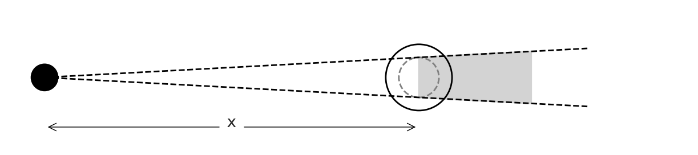
Suppose that a golfer will aim to hit the ball one foot past the hole but with a multiplicative error in the shot’s potential distance, so that \(u=(x+1)(1+\epsilon)\), where the error \(\epsilon\) has a normal distribution with mean 0 and standard deviation \(\sigma_{\rm distance}\). In statistics notation, this model is, \(u\sim\normal(x+1,(x+1)\sigma_{\rm distance})\), and the distance is acceptable if \(u\in [x,x+3]\), an event that has probability \(\Phi\left(\frac{2}{(x+1)\sigma_{\rm distance}}\right)-\Phi\left(\frac{-1}{(x+1)\sigma_{\rm distance}}\right).\)
Putting these together, the probability a shot goes in becomes, \(\left(2\Phi\left(\frac{\sin^{-1}((R-r)/x)}{\sigma_{\rm
angle}}\right) -
1\right)\left(\Phi\left(\frac{2}{(x+1)\,\sigma_{\rm
distance}}\right) - \Phi\left(\frac{-1}{(x+1)\,\sigma_{\rm
distance}}\right)\right)\), where we have renamed the parameter \(\sigma\) from our earlier model to \(\sigma_{\rm angle}\) to distinguish it from the new \(\sigma_{\rm distance}\) parameter. We write the new model in Stan, giving it the name golf_angle_distance_binomial.stan to convey that it accounts both for angle and distance:
model_3 = CmdStanModel(stan_file=str("golf_angle_distance_binomial.stan"))
print_stan(model_3)data {
int J;
vector[J] x;
array[J] int n;
array[J] int y;
real r, R;
real overshot, distance_tolerance;
}
transformed data {
vector[J] threshold_angle = asin((R-r) ./ x);
}
parameters {
real<lower=0> sigma_angle;
real<lower=0> sigma_distance;
}
model {
[sigma_angle, sigma_distance] ~ normal(0, 1);
vector[J] p_angle = 2*Phi(threshold_angle / sigma_angle) - 1;
vector[J] p_distance =
Phi((distance_tolerance - overshot) ./ ((x + overshot)*sigma_distance)) -
Phi(-overshot ./ ((x + overshot)*sigma_distance));
vector[J] p = p_angle .* p_distance;
y ~ binomial(n, p);
}
generated quantities {
real sigma_degrees = sigma_angle * 180 / pi();
}
The result is a model with two parameters, \(\sigma_{\rm angle}\) and \(\sigma_{\rm distance}\). Even this improved geometry-based model is a gross oversimplification of putting, and the average distances in the binned data are not the exact distances for each shot. But it should be an advance on the earlier one-parameter model; the next step is to see how it fits the data.
Here we have defined overshot and distance_tolerance as data, which Broadie (2018) has specified as 1 and 3 feet, respectively. We might wonder why if the distance range is 3 feet, the overshot is not 1.5 feet. One reason could be that it is riskier to hit the ball too hard than too soft. In addition we assigned weakly informative half-normal(0,1) priors on the scale parameters, \(\sigma_{\rm angle}\) and \(\sigma_{\rm distance}\), which are required in this case to keep the computations stable.
We fit the model to the new dataset.
overshot = 1
distance_tolerance = 3
golf_new_data = {
"x": golf_new["x"].values.tolist(),
"y": golf_new["y"].values.tolist(),
"n": golf_new["n"].values.tolist(),
"J": len(golf_new),
"r": r,
"R": R,
"overshot": overshot,
"distance_tolerance": distance_tolerance,
}
fit_3 = model_3.sample(data=golf_new_data, seed=SEED, show_progress=False)Here is the result:
dt_3 = az.from_cmdstanpy(fit_3)
az.summary(dt_3)| mean | sd | eti95_lb | eti95_ub | ess_bulk | ess_tail | r_hat | mcse_mean | mcse_sd | |
|---|---|---|---|---|---|---|---|---|---|
| sigma_angle | 0.02 | 0.011 | 0.013 | 0.04 | 6 | 11 | 1.64 | 0.0056 | 0.0032 |
| sigma_distance | 0.12 | 0.019 | 0.094 | 0.14 | 7 | 35 | 1.58 | 0.0091 | 0.0041 |
| sigma_degrees | 1.1 | 0.6 | 0.76 | 2.3 | 6 | 11 | 1.64 | 0.32 | 0.18 |
There is poor convergence. Very high Rhat and very low ESSs indicate multimodality. We try initializing MCMC with Pathfinder
pth_3 = model_3.pathfinder(
data=golf_new_data,
num_paths=20,
max_lbfgs_iters=100
)
fit_3 = model_3.sample(
data=golf_new_data,
inits=cmdstan_inits(pth_3),
show_progress=False
)Here is the result:
dt_3 = az.from_cmdstanpy(fit_3)
az.summary(dt_3)| mean | sd | eti95_lb | eti95_ub | ess_bulk | ess_tail | r_hat | mcse_mean | mcse_sd | |
|---|---|---|---|---|---|---|---|---|---|
| sigma_angle | 0.013286 | 6.1e-05 | 0.013 | 0.013 | 924 | 1151 | 1.00 | 2e-06 | 1.5e-06 |
| sigma_distance | 0.13726 | 0.00056 | 0.14 | 0.14 | 914 | 1070 | 1.00 | 1.9e-05 | 1.4e-05 |
| sigma_degrees | 0.7612 | 0.0035 | 0.75 | 0.77 | 924 | 1151 | 1.00 | 0.00012 | 8.8e-05 |
Now the convergence looks fine.
We graph the new data and the fitted model:
sigma_angle_hat = dt_3.posterior["sigma_angle"].values.flatten().mean()
sigma_distance_hat = dt_3.posterior["sigma_distance"].values.flatten().mean()
ax = plot_common(title="Checking model fit", plot_observations=False)
x_grid = np.arange(R - r, 1.1 * golf_new["x"].max(), 0.01)
p_angle_grid = 2 * pz.Normal(0, 1).cdf(np.arcsin((R - r) / x_grid) / sigma_angle_hat) - 1
p_distance_grid = pz.Normal(0, 1).cdf((distance_tolerance - overshot) / ((x_grid + overshot) * sigma_distance_hat)) - \
pz.Normal(0, 1).cdf(-overshot / ((x_grid + overshot) * sigma_distance_hat))
p_grid = p_angle_grid * p_distance_grid
ax.plot(np.concatenate([[0, R - r], x_grid]),
np.concatenate([[1, 1], p_grid]), color="C2")
ax.scatter(golf_new["x"], golf_new["y"] / golf_new["n"], color="C2");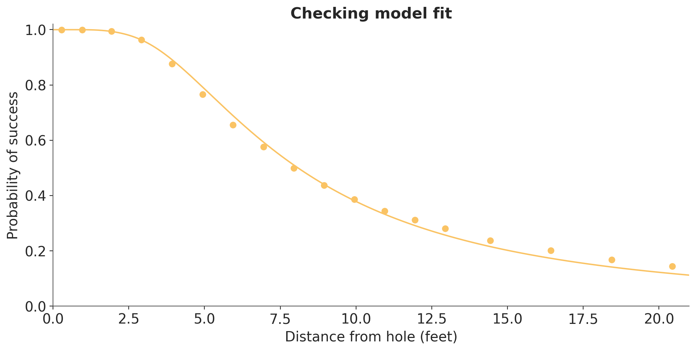
There are problems with the fit in the middle of the range of \(x\). We suspect this is a problem with the binomial error model, as it tries harder to fit points where the counts are higher. Look at how closely the fitted curve hugs the data at the very lowest values of \(x\).
Here are the first few rows of the data:
golf_new.head()| x | n | y | |
|---|---|---|---|
| 0 | 0.28 | 45198 | 45183 |
| 1 | 0.97 | 183020 | 182899 |
| 2 | 1.93 | 169503 | 168594 |
| 3 | 2.92 | 113094 | 108953 |
| 4 | 3.93 | 73855 | 64740 |
With such large values of \(n_j\), the binomial likelihood enforces an extremely close fit at these first few points, and that drives the entire fit of the model.
1.4 Expanding the model by including a fudge factor
To fix this problem we took the data model, \(y_j \sim \mathrm{binomial}(n_j, p_j)\), and added an independent error term to each observation. There is no easy way to add error directly to the binomial distribution—we could replace it with its overdispersed generalization, the beta-binomial, but this would not be appropriate here because the variance for each data point \(i\) would still be roughly proportional to the sample size \(n_j\), and our whole point here is to get away from this assumption and allow for model misspecification—so instead we first approximate the binomial data distribution by a normal and then add independent variance; thus: \[y_j/n_j \sim \mathrm{normal}\left(p_j, \sqrt{p_j(1-p_j)/n_j + \sigma_y^2}\right),\] To write this in Stan there are some complications:
\(y\) and \(n\) are integer variables, which we convert to vectors so that we can multiply and divide them.
To perform componentwise multiplication or division using vectors, you need to use
.*or./so that San knows not to try to perform vector/matrix multiplication and division. Stan is opposite from R in this way: Stan defaults to vector/matrix operations and has to be told otherwise, whereas R defaults to componentwise operations, and vector/matrix multiplication in R is indicated using the%*%operator.
We implement these via the following new code in the transformed data block:
vector[J] raw_proportions = to_vector(y) ./ to_vector(n);And then in the model block:
raw_proportions ~ normal(p, sqrt(p .* (1-p) ./ to_vector(n) + sigma_y^2));To complete the model we add \(\sigma_y\) to the parameters block and assign it a weakly informative half-normal(0,1) prior distribution. Here’s the new Stan program:
model_4 = CmdStanModel(stan_file=str("golf_angle_distance_normal.stan"))
print_stan(model_4)data {
int J;
array[J] int n;
vector[J] x;
array[J] int y;
real r;
real R;
real overshot;
real distance_tolerance;
}
transformed data {
vector[J] threshold_angle = asin((R-r) ./ x);
vector[J] raw_proportions = to_vector(y) ./ to_vector(n);
}
parameters {
real<lower=0> sigma_angle;
real<lower=0> sigma_distance;
real<lower=0> sigma_y;
}
model {
[sigma_angle, sigma_distance, sigma_y] ~ normal(0, 1);
vector[J] p_angle = 2*Phi(threshold_angle / sigma_angle) - 1;
vector[J] p_distance =
Phi((distance_tolerance - overshot) ./ ((x + overshot)*sigma_distance)) -
Phi(-overshot ./ ((x + overshot)*sigma_distance));
vector[J] p = p_angle .* p_distance;
raw_proportions ~ normal(p, sqrt(p .* (1-p) ./ to_vector(n) + sigma_y^2));
}
generated quantities {
real sigma_degrees = sigma_angle * 180 / pi();
}We now fit this model to the data:
fit_4 = model_4.sample(data=golf_new_data, seed=SEED, show_progress=False)Here is the result
dt_4 = az.from_cmdstanpy(fit_4)
df = az.summary(dt_4)
df| mean | sd | eti95_lb | eti95_ub | ess_bulk | ess_tail | r_hat | mcse_mean | mcse_sd | |
|---|---|---|---|---|---|---|---|---|---|
| sigma_angle | 0.017799 | 0.000106 | 0.018 | 0.018 | 1505 | 1794 | 1.00 | 2.8e-06 | 2.1e-06 |
| sigma_distance | 0.08013 | 0.00132 | 0.077 | 0.083 | 1515 | 1687 | 1.00 | 3.4e-05 | 2.6e-05 |
| sigma_y | 0.00306 | 0.00059 | 0.0021 | 0.0044 | 1846 | 1313 | 1.00 | 1.3e-05 | 1e-05 |
| sigma_degrees | 1.0198 | 0.0061 | 1 | 1 | 1505 | 1794 | 1.00 | 0.00016 | 0.00012 |
The new parameter estimates are:
\(\sigma_{\rm angle}\) is estimated at 0.017799, which corresponds to \(\sigma_{\rm degrees}=\) 1.0198. According to the fitted model, there is a standard deviation of 1.0198 degree in the angles of putts taken by pro golfers. The estimate of \(\sigma_{\rm angle}\) has decreased compared to the earlier model that only had angular errors. This makes sense: now that distance errors have been included in the model, there is no need to explain so many of the missed shots using errors in angle.
\(\sigma_{\rm distance}\) is estimated at 0.08013. According to the fitted model, there is a standard deviation of 8% in the errors of distance.
\(\sigma_y\) is estimated at 0.00306. The fitted model fits the aggregate data (success rate as a function of distance) to an accuracy of 0.3 percentage points.
And now we graph:
hats = az.mean(dt_4, round_to="None")
sigma_angle_hat = hats["sigma_angle"]
sigma_distance_hat = hats["sigma_distance"]
ax = plot_common(title="Checking model fit", plot_observations=False)
x_grid = np.arange(R - r, 1.1 * golf_new["x"].max(), 0.01)
p_angle_grid = 2 * pz.Normal(0, 1).cdf(np.arcsin((R - r) / x_grid) / sigma_angle_hat.item()) - 1
p_distance_grid = pz.Normal(0, 1).cdf((distance_tolerance - overshot) / ((x_grid + overshot) * sigma_distance_hat.item())) - \
pz.Normal(0, 1).cdf(-overshot / ((x_grid + overshot) * sigma_distance_hat.item()))
p_grid = p_angle_grid * p_distance_grid
ax.plot(np.concatenate([[0, R - r], x_grid]),
np.concatenate([[1, 1], p_grid]), color="C3")
ax.scatter(golf_new["x"], golf_new["y"] / golf_new["n"], color="C3", zorder=3)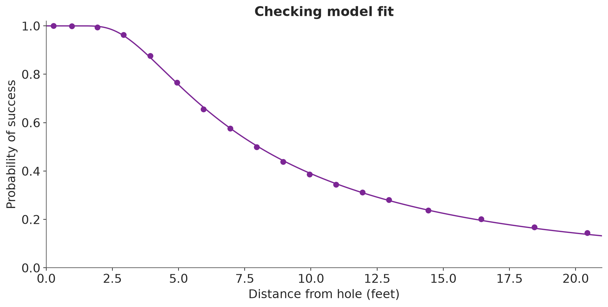
We can go further and plot the residuals from this fit. First we augment the Stan model to compute residuals in the generated quantities block.
model_4_with_resids = CmdStanModel(stan_file=str("golf_angle_distance_normal_with_resids.stan"))
fit_4_with_resids = model_4_with_resids.sample(data=golf_new_data, seed=SEED, show_progress=False)Then we compute the posterior means of the residuals, \(y_j/n_j - p_j\), then plot these vs. distance:
draws_4wr = az.from_cmdstanpy(fit_4_with_resids)
posterior_mean_residual = az.mean(draws_4wr.posterior["residual"])
fig, ax = plt.subplots()
ax.set(xlim=(0, 1.1 * golf_new["x"].max()),
xlabel="Distance from hole (feet)",
ylabel="y/n - fitted E(y/n)",
title="Residuals from fitted model")
ax.axhline(0, color="gray", linestyle="--")
ax.plot(golf_new["x"], posterior_mean_residual)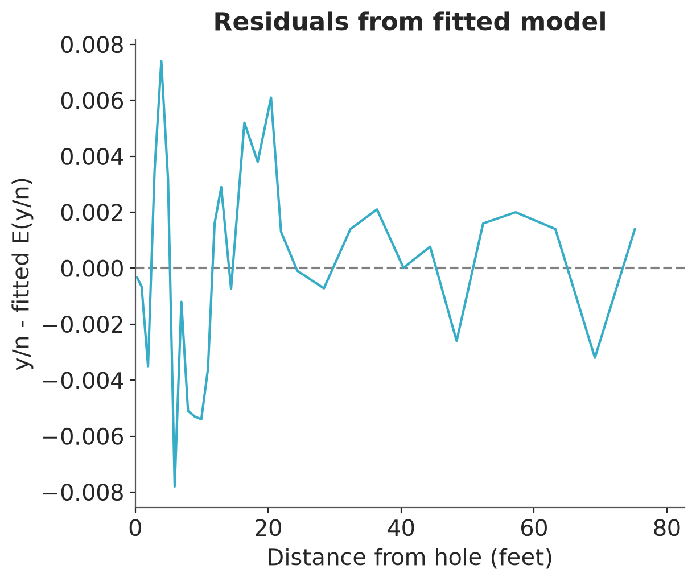
The fit is good, and the residuals show no strong pattern, also they are low in absolute value—the model predicts the success rate to within half a percentage point at most distances, suggesting not that the model is perfect but that there are no clear problems given the current data.
The above model fit, but we were bothered by the normal approximation, not so much for these particular data but rather because it was a sort of admission of failure to not be able to directly use the binomial model.
1.5 Binomial with errors in logit scale
What we wanted to do was to keep the binomial model and then add the error on the logistic scale or something like that, something to keep the probabilities bounded between 0 and 1. We added an error term on the logistic scale with a scale parameter, sigma_eta, estimated from the data.
model_5 = CmdStanModel(stan_file=str("golf_angle_distance_binomial_with_logit_errors.stan"))
print_stan(model_5)data {
int J;
array[J] int n;
vector[J] x;
array[J] int y;
real r;
real R;
real overshot;
real distance_tolerance;
}
transformed data {
vector[J] threshold_angle = asin((R-r) ./ x);
}
parameters {
real<lower=0> sigma_angle;
real<lower=0> sigma_distance;
real<lower=0> sigma_eta;
vector[J] eta;
}
model {
eta ~ normal(0, 1);
[sigma_angle, sigma_distance, sigma_eta] ~ normal(0, 1);
vector[J] p_angle = 2*Phi(threshold_angle / sigma_angle) - 1;
vector[J] p_distance =
Phi((distance_tolerance - overshot) ./ ((x + overshot)*sigma_distance)) -
Phi(-overshot ./ ((x + overshot)*sigma_distance));
vector[J] p = inv_logit(logit(p_angle .* p_distance) + sigma_eta*eta);
y ~ binomial(n, p);
}
generated quantities {
real sigma_degrees = sigma_angle * 180 / pi();
}We fit the model to the data:
fit_5 = model_5.sample(data=golf_new_data, seed=SEED, show_progress=False)Here is the result:
dt_5 = az.from_cmdstanpy(fit_5)
az.summary(dt_5, var_names=["~eta"]) | mean | sd | eti95_lb | eti95_ub | ess_bulk | ess_tail | r_hat | mcse_mean | mcse_sd | |
|---|---|---|---|---|---|---|---|---|---|
| sigma_angle | 0.03 | 0.015 | 0.0059 | 0.048 | 4 | 39 | 3.00 | 0.0077 | 0.003 |
| sigma_distance | 0.13 | 0.05 | 0.094 | 0.21 | 4 | 11 | 3.37 | 0.022 | 0.012 |
| sigma_eta | 0.7 | 0.5 | 0.076 | 1.4 | 4 | 11 | 4.26 | 0.23 | 0.11 |
| sigma_degrees | 1.5 | 0.9 | 0.34 | 2.7 | 4 | 39 | 3.00 | 0.44 | 0.17 |
Unfortunately, when we try to fit this new model to our data, the console fills up with warnings and the chains don’t mix. We try initializing with Pathfinder.
pth_5 = model_5.pathfinder(
data=golf_new_data,
num_paths=20,
max_lbfgs_iters=100
)
fit_5 = model_5.sample(
data=golf_new_data,
inits=cmdstan_inits(pth_5),
show_progress=False
)Here is the result:
dt_5 = az.from_cmdstanpy(fit_5)
az.summary(dt_5, var_names=["~eta"]) | mean | sd | eti95_lb | eti95_ub | ess_bulk | ess_tail | r_hat | mcse_mean | mcse_sd | |
|---|---|---|---|---|---|---|---|---|---|
| sigma_angle | 0.0077 | 0.00124 | 0.0055 | 0.01 | 561 | 789 | 1.01 | 5.3e-05 | 4.1e-05 |
| sigma_distance | 0.2005 | 0.0081 | 0.19 | 0.22 | 1132 | 1287 | 1.00 | 0.00024 | 0.00018 |
| sigma_eta | 0.71 | 0.101 | 0.54 | 0.93 | 863 | 1313 | 1.01 | 0.0034 | 0.0027 |
| sigma_degrees | 0.443 | 0.071 | 0.32 | 0.6 | 561 | 789 | 1.01 | 0.003 | 0.0023 |
The sampling is slower than for earlier models, but the convergence diagnostic look just fine.
We graph the new data and the fitted model:
hats = az.mean(dt_5, round_to="None")
sigma_angle_hat = hats["sigma_angle"].item()
sigma_distance_hat = hats["sigma_distance"].item()
ax = plot_common(title="Checking model fit", plot_observations=False)
ax.set_xlim(0, 1.1 * golf_new["x"].max())
x_grid = np.arange(R - r, 1.1 * golf_new["x"].max(), 0.01)
p_angle_grid = 2 * pz.Normal(0, 1).cdf(np.arcsin((R - r) / x_grid) / sigma_angle_hat) - 1
p_distance_grid = pz.Normal(0, 1).cdf((distance_tolerance - overshot) / ((x_grid + overshot) * sigma_distance_hat)) - \
pz.Normal(0, 1).cdf(-overshot / ((x_grid + overshot) * sigma_distance_hat))
p_grid = p_angle_grid * p_distance_grid
ax.plot(np.concatenate([[0, R - r], x_grid]),
np.concatenate([[1, 1], p_grid]), color="C4")
ax.scatter(golf_new["x"], golf_new["y"] / golf_new["n"], color="C4", zorder=3)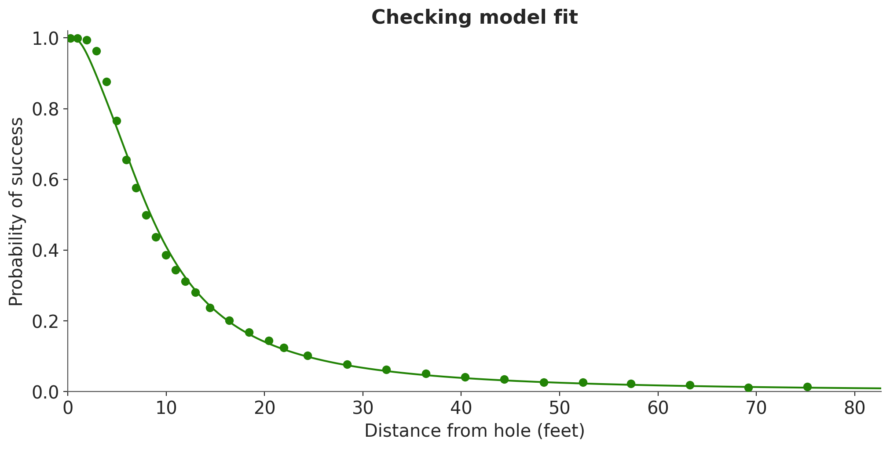
There are now problems with the fit in the low range of \(x\). Clearly the additive error in logit scale is not good.
1.6 Binomial with proportional errors
Instead of additive errors in logit scale, we next fit a three-parameter model that scales all the probabilities down from 1. Each observation has its own proportional error term. The key is to make each element of the multiplier vector (1- epsilon) positive and less than 1. This eliminates the problem with the boundary and the need for the logit. The prior distribution for epsilon keeps the errors under control.
model_6 = CmdStanModel(stan_file=str("golf_angle_distance_binomial_with_proportional_errors.stan"))
print_stan(model_6)data {
int J;
array[J] int n;
vector[J] x;
array[J] int y;
real r;
real R;
real overshot;
real distance_tolerance;
}
transformed data {
vector[J] threshold_angle = asin((R-r) ./ x);
vector[J] raw_proportion = to_vector(y) ./ to_vector(n);
}
parameters {
real<lower=0> sigma_angle;
real<lower=0> sigma_distance;
real<lower=0> sigma_epsilon;
vector<lower=0, upper=1>[J] epsilon;
}
transformed parameters {
vector[J] p_angle = 2*Phi(threshold_angle / sigma_angle) - 1;
vector[J] p_distance =
Phi((distance_tolerance - overshot) ./ ((x + overshot)*sigma_distance)) -
Phi(-overshot ./ ((x + overshot)*sigma_distance));
vector[J] p = p_angle .* p_distance .* (1 - epsilon);
}
model {
[sigma_angle, sigma_distance] ~ normal(0, 1);
epsilon ~ exponential(1/sigma_epsilon);
y ~ binomial(n, p);
}
generated quantities {
real sigma_degrees = sigma_angle * 180 / pi();
vector[J] residual = raw_proportion - p_angle .* p_distance;
}We fit the model to the data:
fit_6 = model_6.sample(data=golf_new_data, seed=SEED, show_progress=False)Here is the result:
dt_6 = az.from_cmdstanpy(fit_6)
az.summary(dt_6, var_names="sigma", filter_vars="like")| mean | sd | eti95_lb | eti95_ub | ess_bulk | ess_tail | r_hat | mcse_mean | mcse_sd | |
|---|---|---|---|---|---|---|---|---|---|
| sigma_angle | 0.017423 | 7.6e-05 | 0.017 | 0.018 | 1442 | 1610 | 1.00 | 2.1e-06 | 2.1e-06 |
| sigma_distance | 0.08015 | 0.00089 | 0.078 | 0.082 | 1243 | 1991 | 1.00 | 2.5e-05 | 1.8e-05 |
| sigma_epsilon | 0.0129 | 0.0044 | 0.0063 | 0.023 | 704 | 1626 | 1.00 | 0.00016 | 0.00016 |
| sigma_degrees | 0.9983 | 0.0043 | 0.99 | 1 | 1442 | 1610 | 1.00 | 0.00012 | 0.00012 |
We graph the new data and the fitted model:
hats = az.mean(dt_6, round_to="None")
sigma_angle_hat = hats["sigma_angle"].item()
sigma_distance_hat = hats["sigma_distance"].item()
ax = plot_common(title="Checking model fit", plot_observations=False)
ax.set_xlim(0, 1.1 * golf_new["x"].max())
x_grid = np.arange(R - r, 1.1 * golf_new["x"].max(), 0.01)
p_angle_grid = 2 * pz.Normal(0, 1).cdf(np.arcsin((R - r) / x_grid) / sigma_angle_hat) - 1
p_distance_grid = pz.Normal(0, 1).cdf((distance_tolerance - overshot) / ((x_grid + overshot) * sigma_distance_hat)) - \
pz.Normal(0, 1).cdf(-overshot / ((x_grid + overshot) * sigma_distance_hat))
p_grid = p_angle_grid * p_distance_grid
ax.plot(np.concatenate([[0, R - r], x_grid]),
np.concatenate([[1, 1], p_grid]), color="C5")
ax.scatter(golf_new["x"], golf_new["y"] / golf_new["n"], color="C5", zorder=3)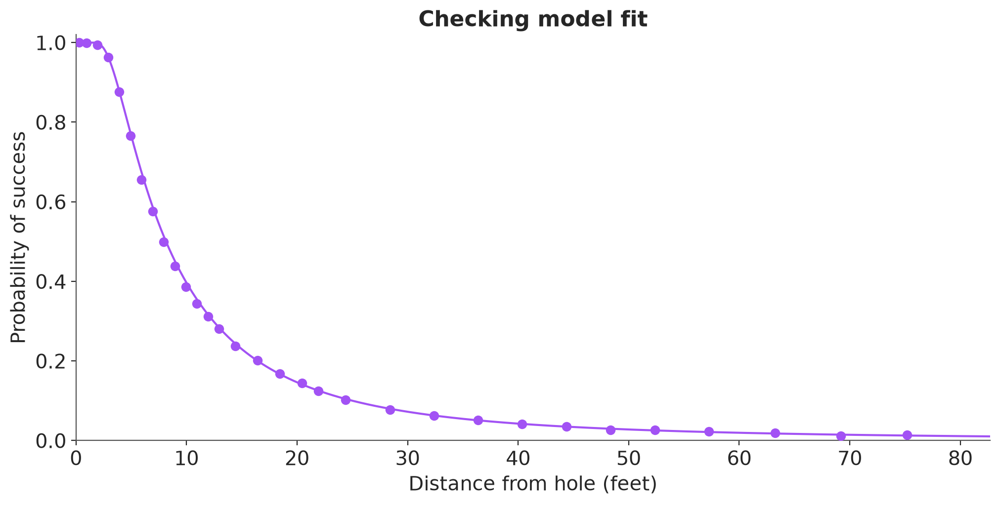
posterior_mean_residual_6 = az.mean(dt_6.posterior["residual"],round_to="None")
_, ax = plt.subplots()
ax.set(xlim=(0, 1.1 * golf_new["x"].max()),
xlabel="Distance from hole (feet)",
ylabel="y/n - fitted E(y/n)",
title="Residuals from fitted model")
ax.axhline(0, color="gray", linestyle="--")
ax.plot(golf_new["x"], posterior_mean_residual_6)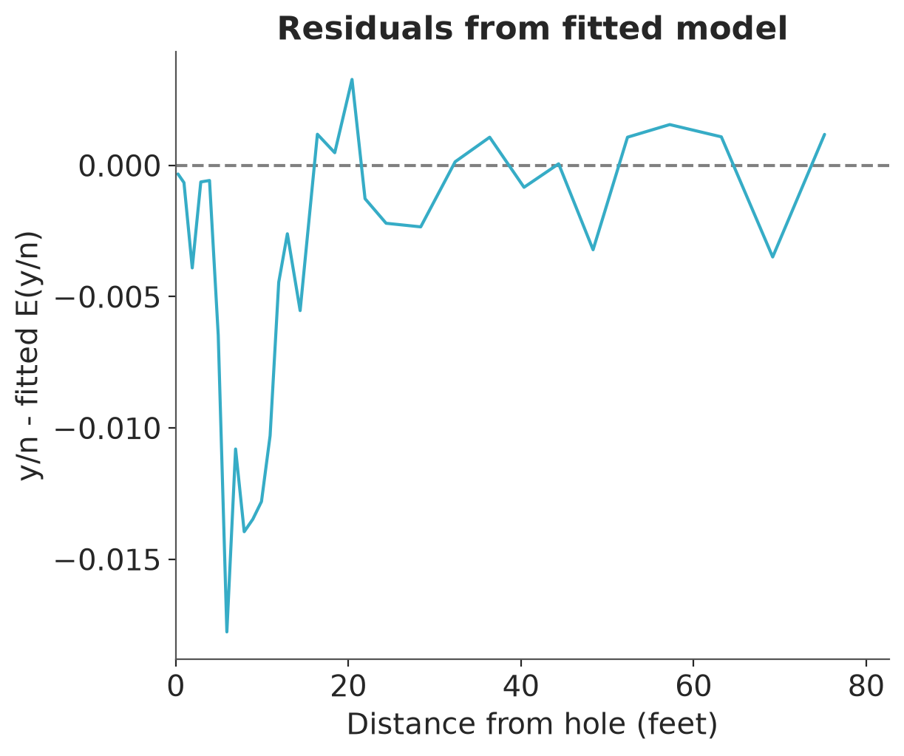
The model fit looks good. The residual plot shows that for short distances the model overestimates the probabilities. This pattern could be explained by sensitivity to distance_tolerance and overshot parameters that were fixed.
We change distance_tolerance to be a parameter. We assume Broadie (2018) did use his expertise to choose the value of 3 feet. We use log-normal prior with mean log(3) and standard deviation 0.2 to include that expert information but still have the prior to be relatively weak. We initialize MCMC using the draws from the previous model posterior expect for the new distance_tolerance parameter,
model_7 = CmdStanModel(stan_file="golf_angle_distance_binomial_with_proportional_errors_2.stan")
fit_7 = model_7.sample(data=golf_new_data, seed=SEED, show_progress=False, inits=cmdstan_inits(fit_6))Here is the result:
dt_7 = az.from_cmdstanpy(fit_7)
az.summary(dt_7, var_names="sigma", filter_vars="like")| mean | sd | eti95_lb | eti95_ub | ess_bulk | ess_tail | r_hat | mcse_mean | mcse_sd | |
|---|---|---|---|---|---|---|---|---|---|
| sigma_angle | 0.01615 | 0.00052 | 0.015 | 0.017 | 684 | 1726 | 1.01 | 2.1e-05 | 1.1e-05 |
| sigma_distance | 0.1109 | 0.0097 | 0.092 | 0.12 | 664 | 1815 | 1.01 | 0.0004 | 0.0002 |
| sigma_epsilon | 0.003 | 0.0018 | 0.00081 | 0.0076 | 714 | 1204 | 1.01 | 6.1e-05 | 8.6e-05 |
| sigma_degrees | 0.926 | 0.03 | 0.88 | 0.98 | 684 | 1726 | 1.01 | 0.0012 | 0.0006 |
We graph the new data and the fitted model:
hats = az.mean(dt_7, round_to="None")
sigma_angle_hat = hats["sigma_angle"].item()
sigma_distance_hat = hats["sigma_distance"].item()
distance_tolerance_7 = hats["distance_tolerance"].item()
overshot_7 = 1
ax = plot_common(title="Checking model fit", plot_observations=False)
ax.set_xlim(0, 1.1 * golf_new["x"].max())
x_grid = np.arange(R - r, 1.1 * golf_new["x"].max(), 0.01)
p_angle_grid = 2 * pz.Normal(0, 1).cdf(np.arcsin((R - r) / x_grid) / sigma_angle_hat) - 1
p_distance_grid = pz.Normal(0, 1).cdf((distance_tolerance_7 - overshot_7) / ((x_grid + overshot_7) * sigma_distance_hat)) - \
pz.Normal(0, 1).cdf(-overshot_7 / ((x_grid + overshot_7) * sigma_distance_hat))
p_grid = p_angle_grid * p_distance_grid
ax.plot(np.concatenate([[0, R - r], x_grid]),
np.concatenate([[1, 1], p_grid]), color="C6")
ax.scatter(golf_new["x"], golf_new["y"] / golf_new["n"], color="C6", zorder=3)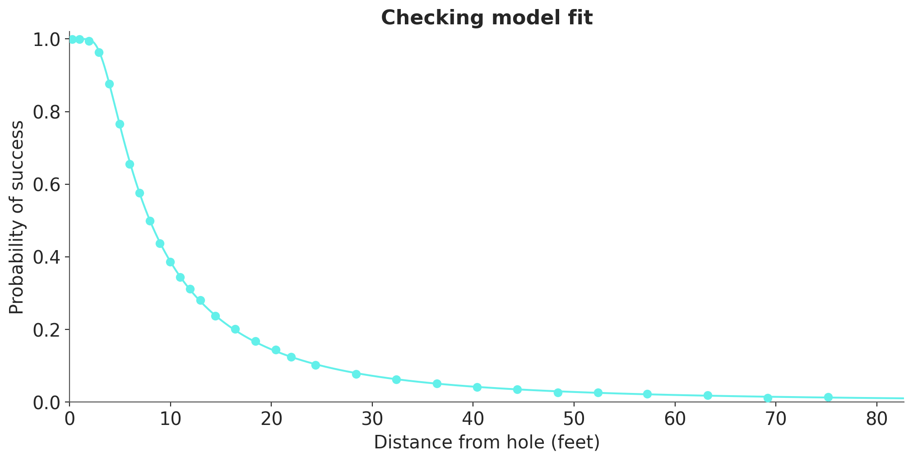
posterior_mean_residual_7 = az.mean(dt_7.posterior["residual"], round_to="None")
_, ax = plt.subplots()
ax.set_xlim(0, 1.1 * golf_new["x"].max())
ax.set_xlabel("Distance from hole (feet)")
ax.set_ylabel("y/n - fitted E(y/n)")
ax.set_title("Residuals from fitted model")
ax.axhline(0, color="gray", linestyle="--")
ax.plot(golf_new["x"], posterior_mean_residual_7);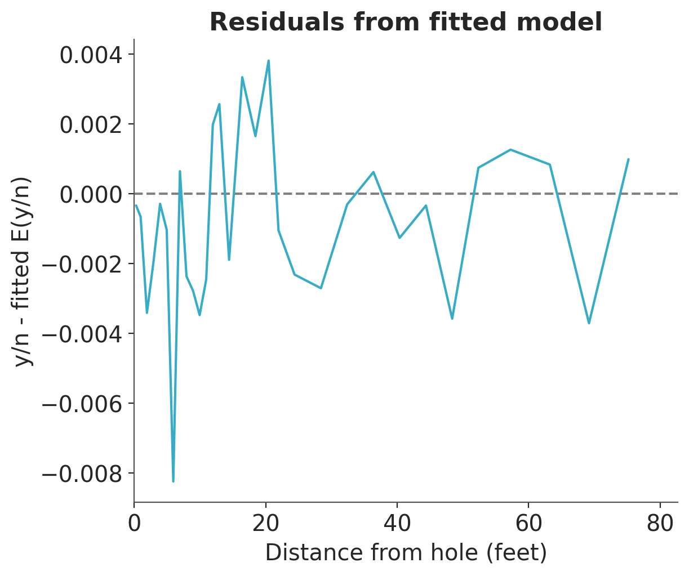
The residuals are now smaller with standard deviation halved, and there is no obvious pattern. Looking at the posterior of distance_tolerance most of the posterior mass is above 3 and the posterior is much narrower than the prior and thus likelihood is informative about it.
az.summary(az.from_cmdstanpy(fit_7), var_names=["distance_tolerance"])| mean | sd | eti95_lb | eti95_ub | ess_bulk | ess_tail | r_hat | mcse_mean | mcse_sd | |
|---|---|---|---|---|---|---|---|---|---|
| distance_tolerance | 3.9 | 0.22 | 3.4 | 4.2 | 661 | 1876 | 1.01 | 0.0088 | 0.0053 |
For the final model we change overshot to be a parameter, too. We assume Broadie (2018) did use his expertise to choose the value of 1 feet. We use log-normal prior with mean log(1) and standard deviation 0.2 to include that expert information but still have the prior to be relatively weak. We initialize MCMC using the draws from the previous model posterior expect for the new overshot parameter and Pathfinder,
model_8 = CmdStanModel(stan_file=str("golf_angle_distance_binomial_with_proportional_errors_3.stan"))
pth_8 = model_8.pathfinder(
data=golf_new_data,
num_paths=40,
max_lbfgs_iters=100,
)
fit_8 = model_8.sample(
data=golf_new_data,
seed=SEED,
show_progress=False,
inits=cmdstan_inits(pth_8),
)Here is the result:
dt_8 = az.from_cmdstanpy(fit_8)
az.summary(dt_8, var_names="sigma", filter_vars="like")| mean | sd | eti95_lb | eti95_ub | ess_bulk | ess_tail | r_hat | mcse_mean | mcse_sd | |
|---|---|---|---|---|---|---|---|---|---|
| sigma_angle | 0.0159 | 0.00063 | 0.015 | 0.017 | 621 | 1433 | 1.01 | 2.9e-05 | 1.6e-05 |
| sigma_distance | 0.1012 | 0.0126 | 0.075 | 0.12 | 727 | 1228 | 1.01 | 0.00048 | 0.00033 |
| sigma_epsilon | 0.003 | 0.0018 | 0.00079 | 0.0077 | 496 | 922 | 1.01 | 8e-05 | 9.9e-05 |
| sigma_degrees | 0.911 | 0.036 | 0.86 | 0.98 | 621 | 1433 | 1.01 | 0.0017 | 0.00094 |
We graph the new data and the fitted model:
hats = az.mean(dt_8, round_to="None")
sigma_angle_hat = hats["sigma_angle"].item()
sigma_distance_hat = hats["sigma_distance"].item()
distance_tolerance_8 = hats["distance_tolerance"].item()
overshot_8 = hats["overshot"].item()
ax = plot_common(title="Checking model fit", plot_observations=False)
ax.set_xlim(0, 1.1 * golf_new["x"].max())
x_grid = np.arange(R - r, 1.1 * golf_new["x"].max(), 0.01)
p_angle_grid = 2 * pz.Normal(0, 1).cdf(np.arcsin((R - r) / x_grid) / sigma_angle_hat) - 1
p_distance_grid = pz.Normal(0, 1).cdf((distance_tolerance_8 - overshot_8) / ((x_grid + overshot_8) * sigma_distance_hat)) - \
pz.Normal(0, 1).cdf(-overshot_8 / ((x_grid + overshot_8) * sigma_distance_hat))
p_grid = p_angle_grid * p_distance_grid
ax.plot(np.concatenate([[0, R - r], x_grid]),
np.concatenate([[1, 1], p_grid]), color="C7")
ax.scatter(golf_new["x"], golf_new["y"] / golf_new["n"], color="C7", zorder=3)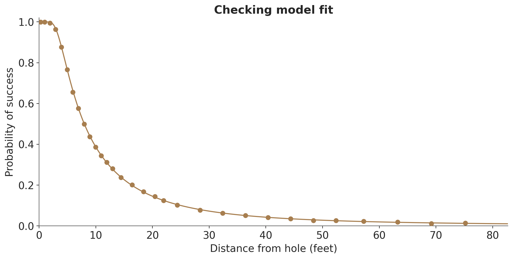
posterior_mean_residual_8 = az.mean(dt_8.posterior["residual"], round_to="None")
_, ax = plt.subplots()
ax.set(xlim=(0, 1.1 * golf_new["x"].max()),
xlabel="Distance from hole (feet)",
ylabel="y/n - fitted E(y/n)",
title="Residuals from fitted model"
)
ax.axhline(0, color="gray", linestyle="--")
ax.plot(golf_new["x"], posterior_mean_residual_8)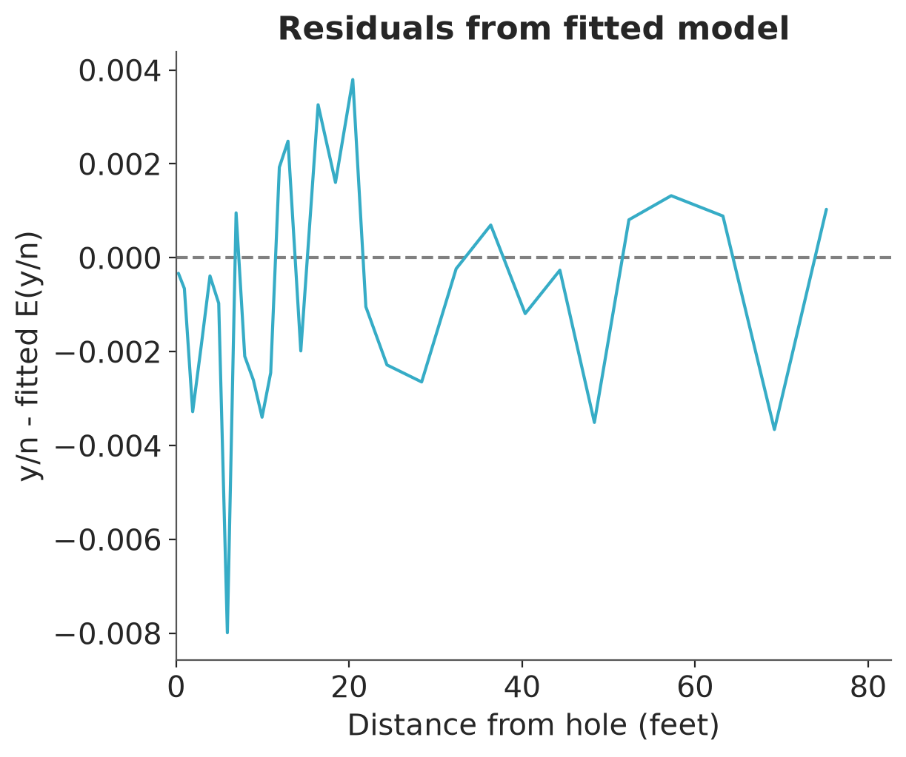
The residuals are very similar to the previous model residuals and with similar standard deviation. If we examine the posterior marginals of distance_tolerance and overshot the standard deviations are only half from the prior standard deviations, hinting that likelihood would be weakly informative on these.
az.summary(az.from_cmdstanpy(fit_8), var_names=["distance_tolerance", "overshot"])| mean | sd | eti95_lb | eti95_ub | ess_bulk | ess_tail | r_hat | mcse_mean | mcse_sd | |
|---|---|---|---|---|---|---|---|---|---|
| distance_tolerance | 3.49 | 0.42 | 2.7 | 4.3 | 987 | 1842 | 1.00 | 0.013 | 0.0091 |
| overshot | 0.864 | 0.124 | 0.64 | 1.1 | 1253 | 1567 | 1.00 | 0.0035 | 0.0025 |
However, when we examine the bivariate posterior we see strong dependency and their ratio is well informed by the likelihood. The posterior standard deviation of the ratio is one fifth of the prior standard deviation. This also explains why adding overshot did not reduce much the residual standard deviation.
az.plot_pair(
dt_8,
var_names=["distance_tolerance", "overshot"],
)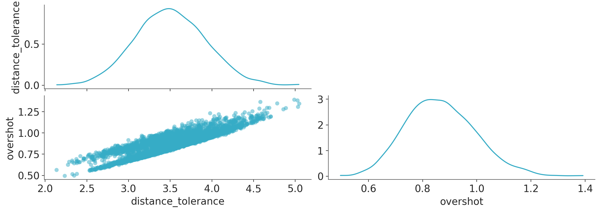
As we can expect the residual standard deviation to decrease when we add more parameters, we also use cross-validation to compare the models. As we have one epsilon parameter for each observation, we need to use integrated PSIS-LOO. We can compute the integrated log_lik with the following stand alone generated quantities code.
gq_ll = CmdStanModel(stan_file=str("golf_log_lik.stan"))
gq_ll_7 = CmdStanModel(stan_file=str("golf_log_lik_7.stan"))
gq_ll_8 = CmdStanModel(stan_file=str("golf_log_lik_8.stan"))When calling generated quantities, we pass only the required variables which allowed us to write more compact Stan code for the log_lik computation.
def compute_loo(fit, gq_model, data):
gq = gq_model.generate_quantities(data, previous_fit=fit)
log_lik = gq.stan_variable("log_lik")
n_chains = fit.chains
n_draws = fit.num_draws_sampling
idata = az.from_dict(
{"log_likelihood": {"y": log_lik.reshape(n_chains, n_draws, -1)}}
)
return az.loo(idata, reff=1)
loo_6 = compute_loo(fit_6, gq_ll, golf_new_data)
loo_7 = compute_loo(fit_7, gq_ll_7, golf_new_data)
loo_8 = compute_loo(fit_8, gq_ll_8, golf_new_data)As we have integrated out the epsilon parameters, the effective number of parameters match the number of remaining parameters, except for the last model where distance_tolerance and overshot parameters are not well informed by the likelihood separately.
print(loo_6)Computed from 4000 posterior samples and 31 observations log-likelihood matrix.
Estimate SE
elpd_loo -185.74 8.39
p_loo 3.06 -
------
Pareto k diagnostic values:
Count Pct.
(-Inf, 0.70] (good) 31 100.0%
(0.70, 1] (bad) 0 0.0%
(1, Inf) (very bad) 0 0.0%
print(loo_7)Computed from 4000 posterior samples and 31 observations log-likelihood matrix.
Estimate SE
elpd_loo -173.36 7.31
p_loo 4.16 -
There has been a warning during the calculation. Please check the results.
------
Pareto k diagnostic values:
Count Pct.
(-Inf, 0.70] (good) 30 96.8%
(0.70, 1] (bad) 1 3.2%
(1, Inf) (very bad) 0 0.0%
print(loo_8)Computed from 4000 posterior samples and 31 observations log-likelihood matrix.
Estimate SE
elpd_loo -173.04 7.19
p_loo 4.24 -
------
Pareto k diagnostic values:
Count Pct.
(-Inf, 0.70] (good) 31 100.0%
(0.70, 1] (bad) 0 0.0%
(1, Inf) (very bad) 0 0.0%
Finally we compare the expected predictive performances
df_compare = az.compare(
{
"Distance tolerance and overshot fixed": loo_6,
"Distance tolerance parameter and overshot fixed": loo_7,
"Distance tolerance and overshot parameters": loo_8,
}
)
df_compare| rank | elpd_diff | dse | p_worse | diag_diff | diag_elpd | p | elpd | se | weight | |
|---|---|---|---|---|---|---|---|---|---|---|
| Distance tolerance and overshot parameters | 0 | 0.0 | 0.00 | NaN | 4.2 | -170.0 | 7.2 | 1.0 | ||
| Distance tolerance parameter and overshot fixed | 1 | -0.3 | 0.25 | 0.91 | N < 100 | 1 k̂ > 0.70 | 4.2 | -170.0 | 7.3 | 0.0 |
| Distance tolerance and overshot fixed | 2 | -13.0 | 4.40 | 1.00 | N < 100 | 3.1 | -190.0 | 8.4 | 0.0 |
Adding distance_tolerance parameter significantly improves the performance, but adding overshot parameter does not improve the fit. However the model which has both distance_tolerance and overshot has posterior that is more informative on what can be learned about this aspect of the model.
References
Berry, D. 1996. Statistics: A Bayesian Perspective. Belmont, Calif.: Wadsworth.
Broadie, M. 2018. “Two Simple Putting Models in Golf.” https://statmodeling.stat.columbia.edu/wp-content/uploads/2019/03/putt_models_20181017.pdf.
Licenses
- Code © 2019–2026, Andrew Gelman and Aki Vehtari, licensed under BSD-3.
- Text © 2019–2026, Andrew Gelman and Aki Vehtari, licensed under CC-BY-NC 4.0.